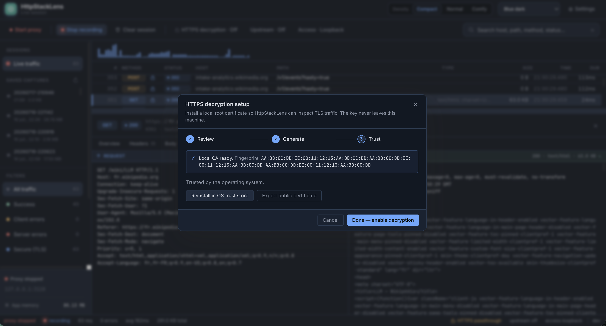
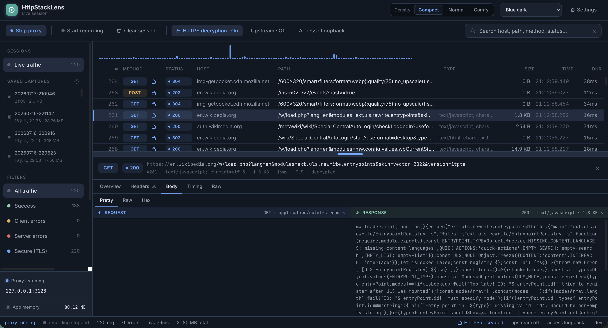
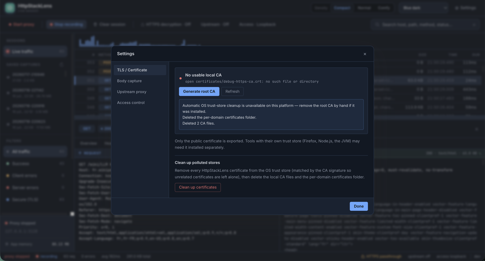

Decryption works by adding a debug root certificate to your OS trust store and signing a fake certificate for each site you visit. That's powerful for debugging and risky if forgotten — anyone who steals the CA key could impersonate sites to your machine. Always run the cleanup in section 4 when you're done. Never use this on a shared machine.
1. Enable HTTPS decryption
Decryption is off by default. You can turn it on two ways.
Option A — from the config file
decrypt_https:
enabled: true # intercept & decrypt HTTPS (generates + installs a per-domain cert)
cert_manager:
ca_cert_file: "certificates/debug-https-ca.crt"
ca_key_file: "certificates/debug-https-ca.key"
domain_certs_folder: "certificates/domains"
mime_types:
- name: "application/json"
- name: "text/*"
max_size_kb: 10000The mime_types rules decide which response bodies are captured and up to what size — handy to avoid buffering large binary downloads.
Option B — toggle it live from the Web UI
Open http://localhost:9000 and flip the decryption toggle. No restart needed — under the hood the UI calls POST /api/settings/decrypt-https.

2. Generate & trust the debug CA
The first time decryption runs, HttpStackLens generates a debug root CA and installs it into your Windows store / macOS keychain, then mints a per-domain certificate for each host you browse. From the UI you can generate, install and export the CA explicitly:
| Action | Endpoint | What it does |
|---|---|---|
| Generate | /api/certificates/ca/generate | Creates the root CA key + certificate on disk. |
| Install | /api/certificates/ca/install | Adds the root CA to the OS trust store. |
| Export | /api/certificates/ca/export | Downloads the CA certificate (e.g. to trust it in Firefox, which uses its own store). |
Every CA this app creates embeds the marker My Local CA for debugging HTTPS in its subject, and every leaf it signs carries it in the issuer. Cleanup matches on that exact string, so it only removes certificates HttpStackLens created — never anything else in your trust store.
3. Inspect decrypted traffic
Send some HTTPS traffic through the proxy and watch it decrypt live:
curl -x http://localhost:3128 https://api.github.com/zenIn the Web UI, decrypted requests are flagged as such — you get headers and body in the clear, with timings, base64 body decoding and inline image previews. The request/response split panes let you focus either side.

4. Clean up — remove every certificate
This is the important part: don't leave the debug CA installed. When you're
finished debugging, run the cleanup. In the Web UI, use the certificate cleanup action; it calls
POST /api/certificates/cleanup, which in one shot:
- Turns HTTPS decryption off.
- Removes the debug root CA — and every per-domain leaf it signed — from the OS trust store (matched by the marker).
- Deletes the per-domain certificates folder (
certificates/domains). - Deletes the root CA certificate and key files from disk.

Automatic OS trust-store cleanup is implemented per platform. Where it isn't available, the cleanup summary tells you so and the on-disk files are still removed — you then remove the root CA by hand from your OS trust store. The CA's subject contains My Local CA for debugging HTTPS, so it's easy to spot.
5. Verify your OS is clean
-
Check the cleanup report
The UI shows how many root and domain certificates were removed. Confirm the counts look right and there are no warnings.
-
Double-check the trust store
Search your OS trust store for the debug CA to confirm it's gone:
# macOS — should print nothing security find-certificate -a -c "My Local CA for debugging HTTPS" \ ~/Library/Keychains/login.keychain-db # Windows (PowerShell) — should print nothing Get-ChildItem Cert:\CurrentUser\Root | Where-Object { $_.Subject -like "*My Local CA for debugging HTTPS*" } -
Confirm the files are gone
ls certificates/ # CA .crt / .key removed ls certificates/domains/ # folder removed
Decryption is off, the debug CA and every certificate it signed are gone from both disk and the OS trust store. Your machine is back to exactly where it started.